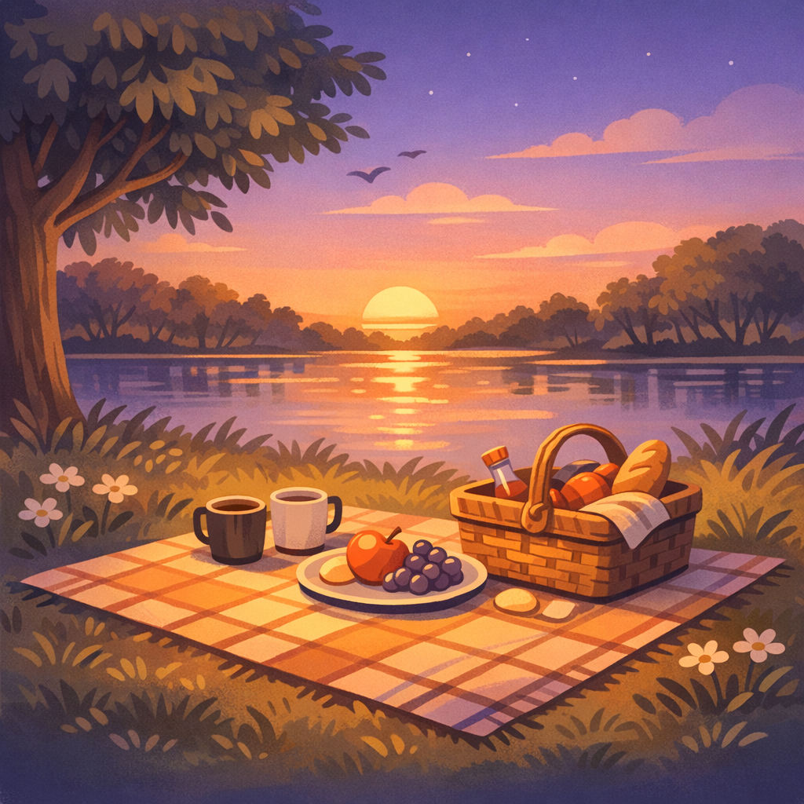

Soft evenings in Hamburg and Lübeck
Small, cozy meetups for people who want gentle conversations, warm spaces, and a calm way to meet others.
Upcoming meetups
Picnic Meetup
Lübeck
Sunday · Stadtpark
Board Game Evening
Lübeck
Friday · Cozy café
Harbor Walk and Talk
Hamburg
Saturday · Landungsbrücken
Café and Quiet Chat
Hamburg
Wednesday · Small café
About Locals Only
Locals Only began with a simple wish: to feel closer to others again.
Hamburg and Lübeck are full of life, yet it is still easy to feel alone in the middle of everything. I wanted a place where meeting people feels natural, warm, and gentle. A space where you can show up as you are and feel welcome.
This project is for people who want small, cozy meetups, soft conversations, and a friendly community. No pressure. No expectations. Just people meeting in a calm way.
If you are looking for connection, you are not the only one. I am looking for it too.